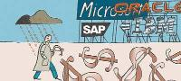

Moore's Law meets Pricing
There's a great
article in the Economist this month about the
current mess that's happening in software pricing.
Moore's
law's predictions about the number of transistors on a chip
look like they'll continue to hold for quite a while, but we're
quickly losing the ability to translate that into clock rate. This
is driving every chip manufacturer to create multicore systems.
Probably the most extreme is Sun's
Niagra, with (effectively) 32 CPUs. Software vendors
like Oracle havn't been cranking up their prices while Moore's law
has been expressed in the clock rate, but now that it's being
expressed in CPU cores, their pricing is set to track Moore's law
(IT managers: panic now). It seems to me that this whole flap can
be fixed by a bit of spin doctoring, weasel wording, marketing:
there's no such thing as a multicore chip - they're single CPUs
that do a great job of supporting multithreading. (wink)